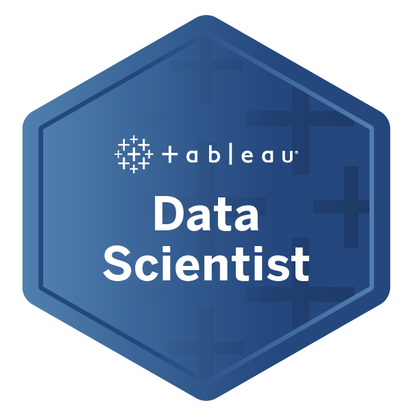

Certified SAFe® 5 Agilist
A Certified SAFe® 5 Agilist (SA) is a SAFe enterprise leadership professional who is part of a Lean-Agile transformation.
Key areas of competency include the application of Lean-Agile principles, execution and release of value through
Agile Release Trains (ARTs), and building an Agile portfolio with Lean-Agile budgeting.
Verify Now

Tableau Data Scientist
Earners of the Tableau Data Scientist badge have shown competency in their ability to fulfill the responsibilities of this role in their organization's
deployment of Tableau. As a Data Scientist, they are experts at deriving valuable insights for large and varied data sets. They are experts in the field
of Applied Machine Learning, Big Data Analytics, Tableau.
Verify Now

Tableau Desktop Specialist
Earners of the Tableau Desktop Specialist title use their foundational knowledge of Tableau Desktop and data analytics to
solve problems. They have demonstrated understanding of Tableau core concepts and terminology.
Desktop Specialists are able to connect to, prepare, explore and analyze data, and share their insights.
Verify Now

Microsoft Certified: Azure Fundamentals
Earners of the Azure Fundamentals certification have demonstrated foundational level knowledge of cloud
services and how those services are provided with Microsoft Azure with knowledge in Azure, Cloud Data,
Cloud Networking, Cloud Security, Cloud Security, Virtualization.
Verify Now